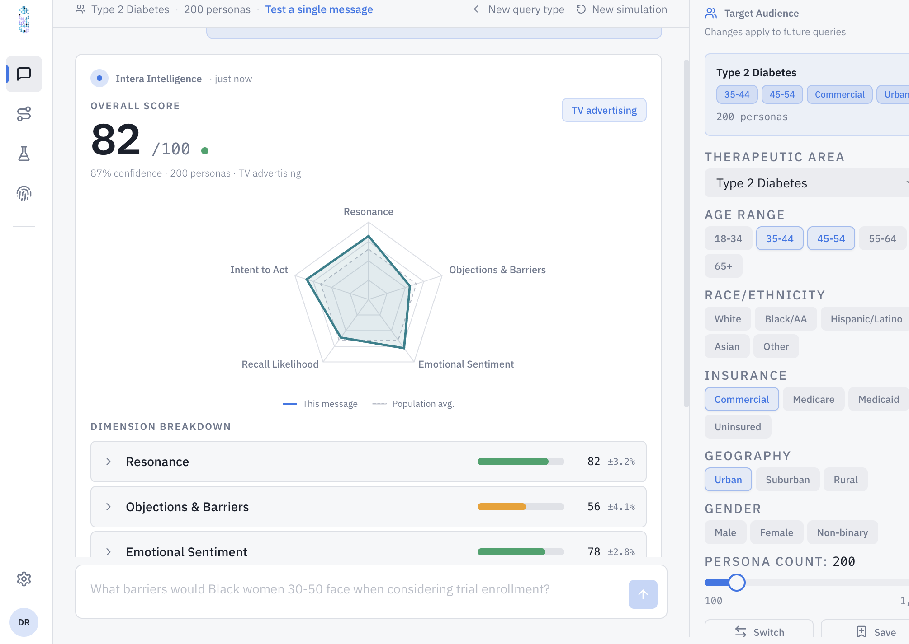

CHORUS · COMMERCIAL PHARMA
Pharma commercial teams make launch decisions, access program designs, and patient support investments without knowing what patients will actually do. Chorus is the intelligence layer that answers that question before the spend is committed.
Request Early AccessTHE PROBLEM
A six-figure patient research engagement takes six to twelve weeks to complete. By the time findings are available, launch strategy is already set. Pharma teams make access program and messaging decisions before knowing how patients will actually respond.
The insight arrives after the commitment is made.
Survey panels and focus groups capture what patients say they will do. The say-do gap in healthcare is well-documented; patients overstate willingness to initiate therapy, understate access barriers, and misreport adherence intent. Behavioral simulation models what patients will actually do.
Decisions based on stated intent carry hidden risk.
Hub services, copay programs, and adherence support are deployed after patients initiate therapy, reaching them after the point where behavioral intervention is most effective. Patients who will disengage are identifiable before they disengage.
The most effective intervention point is before the patient discontinues, not after.

CHORUS PRODUCTS
Test how your target patient population will respond to positioning and messaging before launch, across segments defined by indication, demographics, access barriers, and psychosocial profile. Run 100+ message variants against calibrated synthetic patient cohorts. Predict engagement, flag messages that backfire, and identify the best-performing variant per segment before media spend is committed.
GLP-1 launch example: "restart your journey" framing converts three times higher in the 30–55 age group versus weight-loss-number framing.
Model how defined patient segments move through therapy initiation, titration, and persistence before the cohort experiences it. Simulate patient flow from diagnosis through referral, treatment, refill, and switch. Quantify drop-off at each stage by segment with behavioral rationale. Identify where access friction, cost barriers, or clinical anxiety are creating gaps before they become outcomes data.
T2D example: 30% of patients never fill the first prescription due to cost and injection anxiety. Pharmacist counseling at fill lifts adherence in that segment.
Replace six-figure patient research engagements with same-day behavioral simulation. Cost per study: $2K–5K versus traditional $5K–100K. Turnaround: same day versus six to twelve weeks. Unlimited re-runs for new segments, messages, or product profiles. Per-segment prediction with behavioral rationale rather than broad population averages.
The insight arrives before the launch decision is made, not after.
HOW IT WORKS
01
Demographics, clinical state, psychosocial traits, and COM-B behavioral framework. Every synthetic patient is grounded in a specific segment profile.
02
Validated psychometrics, narrative data, and activation steering. Calibrated to model what patients would actually do, not what they say they would do.
03
Run the patient population through your scenario: launch messaging, access program design, patient journey, or protocol. Segment-level behavioral responses returned.
04
Segment-level predictions, behavioral rationale, and actionable recommendations. Delivered under your brand if licensing for client engagements.
AUDIENCE
Pre-launch patient intelligence for brand teams, market access, and patient services. Predict how your target population will respond to messaging, access program design, and support touchpoints before committing launch resources. Every Chorus engagement generates validated behavioral data that feeds back into improved calibration for future studies.
License Chorus capabilities into your existing patient experience and commercialization offerings without building internally. White-label behavioral simulation delivered under your firm's brand. Client-ready outputs your team presents while Intera runs in the background. Per-engagement or annual licensing available.
Identify patients at highest risk of disengagement before they disengage. Design adherence programs around the behavioral profiles of patients who will actually discontinue, not around average patients who persist. Proactive intervention design grounded in prediction, not reactive outreach grounded in claims data.